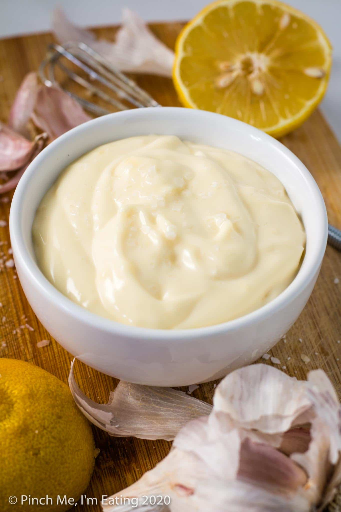

Easy Aioli

Description
Easy aioli is the perfect complement to a weekday fish.
Goes great with crab cakes, fish sticks, and french fries!
From casual to company, no one will know how easy it was.
Ingredients
- ⅓ cup mayonnaise
- 10 marinated pitted Kalamata olives, finely chopped
- 2 tablespoons olive marinade from the jar
Steps
- Mix mayonnaise and Kalamata olives together in a bowl.
Thin mixture with olive marinade to desired consistency.